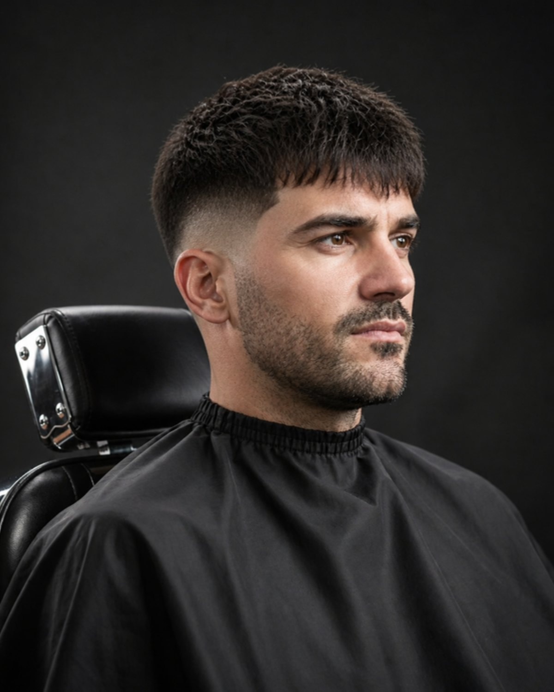
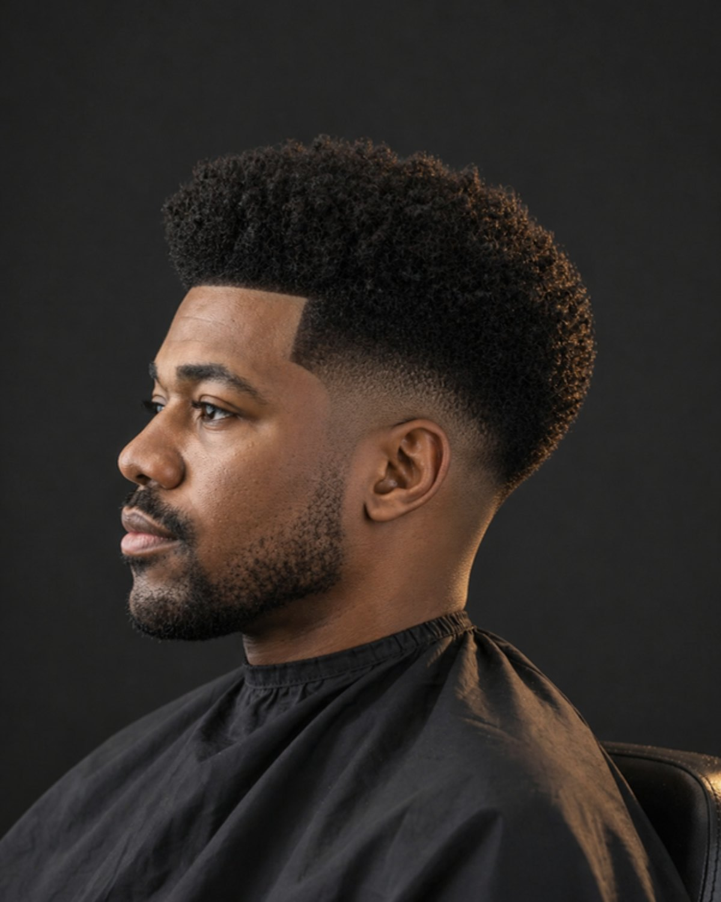
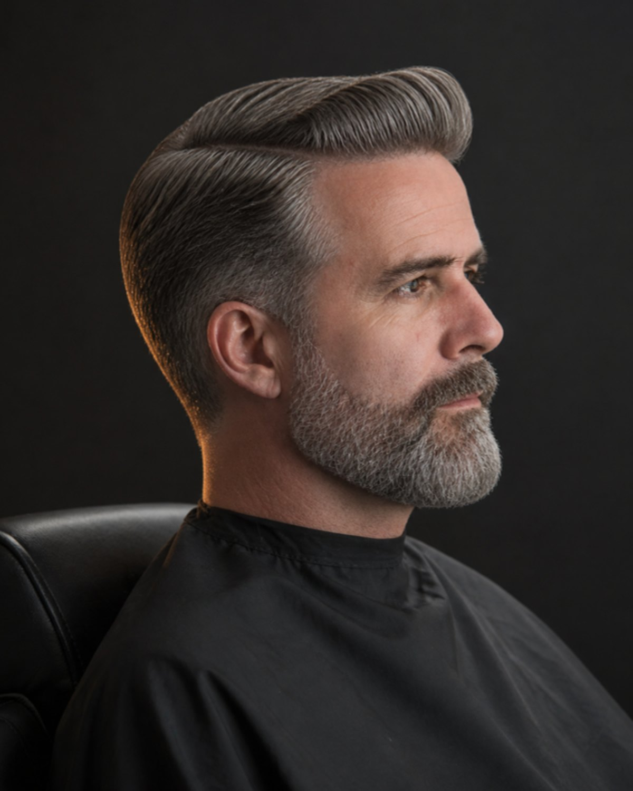
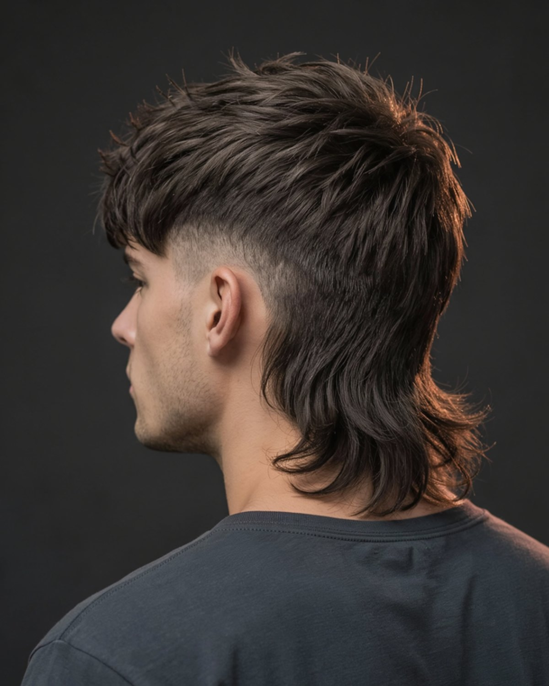
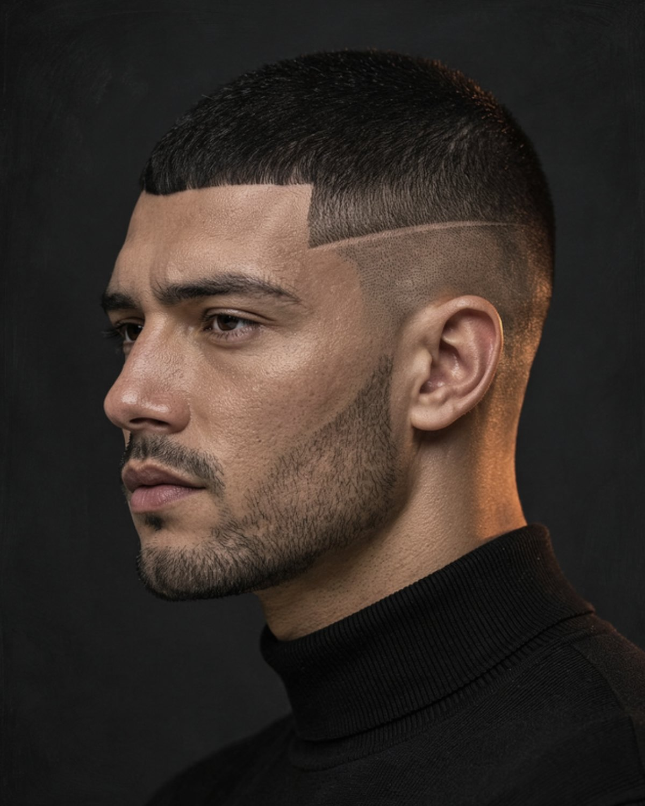
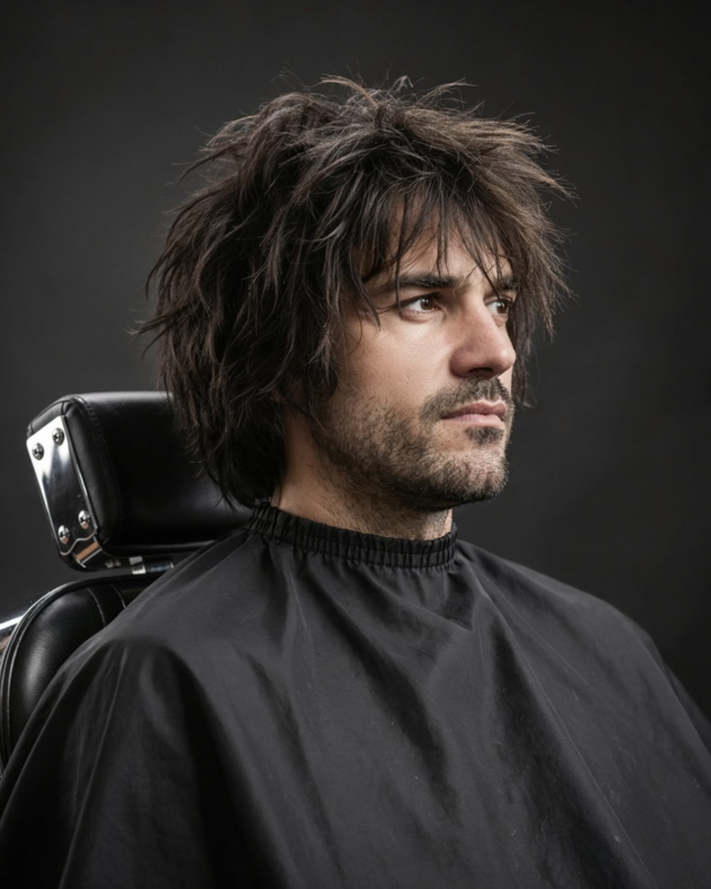
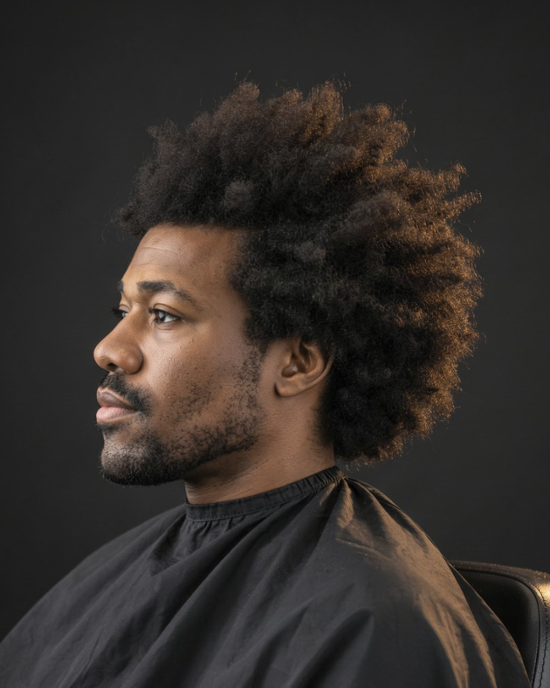
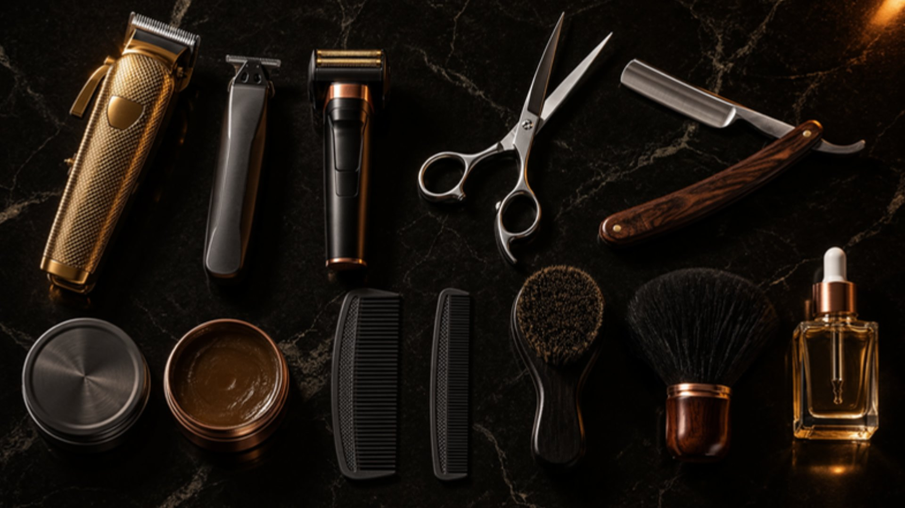
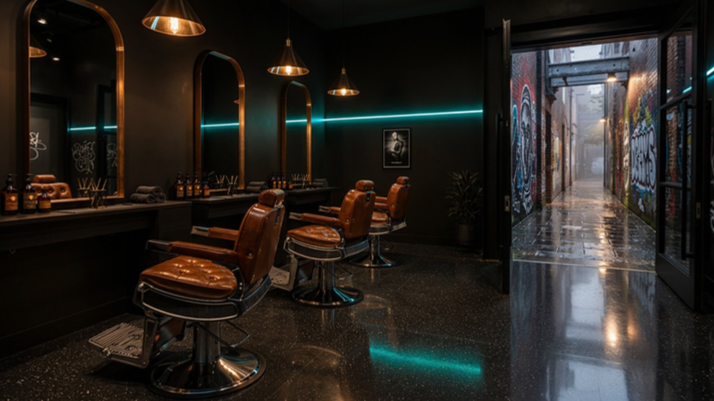

No. 01
Skin Fade & Crop
Seamless zero-to-skin blend with a choppy matte top. Our bestseller.
$5545 min
Precision cuts after dark.
A barbershop down a laneway, open while the city glows.
01 — The Ritual
02 — The Menu

Seamless zero-to-skin blend with a choppy matte top. Our bestseller.

Fade that dips behind the ear, curls shaped and defined, never flattened.

Scissor-over-comb taper, a hard part and volume up top. Timeless.

Burst fade around the ear, texture on top, flow at the back. Fitzroy-approved.

One guard, a razor line-up and an optional hard part etched in.
Disconnected undercut, soft middle part, movement that lasts all week.
03 — Transformations
Drag the slider across each photo. Same light, same angle, same lens, so the cut is the only thing that changes.


04 — The Kit
What sits on every station, and why. Steel is sterilised between every client and razor blades are single-use.

Magnetic motor around 6,800–7,200 RPM with a DLC-coated fade blade. Runs cool, stays sharp, keeps the bulk work clean.
Zero-gapped for outlines, line-ups and etched designs. It's how the edges get that razor-crisp look.
Double-foil, around 10,000 RPM. Takes a skin fade down to bare skin with no razor burn.
Shavette with a fresh single-use blade for every client. Used for necklines, cheek lines and the hot towel shave.
Hand-honed stainless steel with a convex edge, plus thinning shears for texture. Every crop and every curl goes through these.
Heat- and static-resistant combs, a boar-bristle fade brush and a neck duster to clear every last clipping.
Towels steamed with eucalyptus to open the pores before the blade goes on.
Matte clay, water-based pomade, sea salt spray, beard oil and an alcohol-free aftershave balm. All available to take home.

05 — Find us
Ember Lane, off Smith Street
Fitzroy VIC 3065
Tram 86 to Gertrude St · Walk-ins welcome after 8pm
06 — Good to know
Yes, after 8pm on weeknights, subject to chair availability. Before then we run on bookings so nobody waits.
Most cuts are 45 to 50 minutes, including a consult, a hot towel and styling. Cut + beard combos run around 70 minutes.
Give us 12 hours' notice and there's no charge. Late cancellations and no-shows may be asked for a deposit next time.
Card, Apple Pay and Google Pay. Cash is fine too. No surcharge on debit.
Please do. We'll talk through what suits your hair type and face shape before the clippers come out.
07 — Your chair is waiting
Send a request and we'll confirm your time by reply, usually within the hour during opening hours.
Prefer to call? (03) 9000 0000